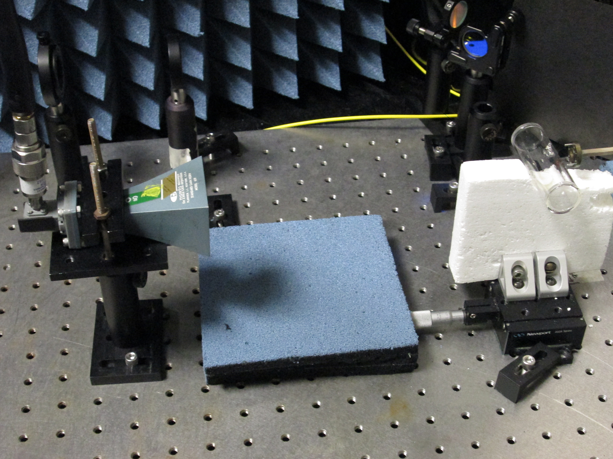

OAQ / RF Sensing
Unseen signals. New understanding.
Exploring new observations through RF sensing.
01 / PURPOSE
Technology under reviewA new perspective on the radio environment.
Starting from magnetic sensing, OAQ is also reviewing the potential of RF signal detection. Our goal is to find new information that complements existing observations.
Unseen signals
Expanding observation possibilities
Technology under review
Reference photography and planned visuals. Interface concepts contain no live data. Swipe or scroll horizontally to explore.Swipe or scroll horizontally to explore.
02 / INTERFACE CONCEPT
Radio environment information
A proposed interface for understanding observations at a glance. Actual interfaces and data will be shared later.
03 / APPROACH
Start with the possibilities.
We review sensing principles and application environments to define future validation needs. Specific methods and product configurations have not yet been selected.
04 / INTENDED VALUE
Toward clearer understanding.
Our ambition is a new sense that helps build a broader understanding of surrounding signals and environments.
Intended benefits and development direction. Actual performance, scope of application, and operating conditions require separate validation.
Discuss a technical or business partnership ↗